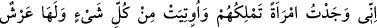
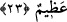

sebebiyledir. Bu iki yerin arası ise az önce geçtiği üzere üç günlük yol, üç fersah veya
üç mil idi. Bu, Ya’kub (a.s.)’a Yusuf’un yerinin gizli kalması gibi Allah Teâlâ’nın uygun
gördüğü bir maslahat yüzünden böyle olmuştur.
An gelir en gökyüzünün tepesinde otururum,
An gelir ayağımın ucunu göremem
23. Gerçekten, onlara (Sebe’lilere) hükümdarlık eden, kendisine her şey verilmiş
ve büyük bir tahtı olan bir kadınla karşılaştım.
“Gerçekten, onlara (Sebe’lilere) hükümdarlık eden,”
Bu cümle, hüdhüdün getirdiği haberi açıklamak üzere başlangıç cümlesidir.
“Onlara” zamiri, bölgenin ismi olmak üzere Sebe’ye ya da şehirlerinin isminin zikri
ile orasının halkına âiddir. Yani, Belkıs onların üzerinde hükümranlık ve tasarrufa
sâhipti. Yoksa onların Belkıs’ın köleleri oldukları kasdedilmemiştir.
Âyette kasdedilen bu kadın, Belkıs bint Şurahbîl b. Mâlik b. Rayyân’dır. O da Ya’rub
b. Kahtân’ın neslindendir. Belkıs’ın babası bütün Yemen’e hükümran olmuştu. O bu
hükümranlığı kırk babadan mîras olarak elde etmişti. Belkıs’tan başka çocuğu yoktu.
Böylece Belkıs, babasından sonra idâreye hâkim olmuş, halk da ona boyun eğmişti. O
ve kavmi ateşe taparlardı. Babası etraftaki meliklere: “Sizin hiç biriniz bana denk
değildir” derdi. Bu yüzden onlarla âile bağı kurmayı da reddetmiştir. Onu cinlerden
Kâria ya da Rayhâne bint Seken isimli bir kadınla evlendirdiler. Bu kadın da ona
Belkıs’ı dünyaya getirdi. el-Kâmus’ta belirtildiği üzere “Bilkîs” diye isimlendirilir.
Bu, cinlerle insanlar arasında cinsî münâsebetin mümkün olabileceğine delâlet eder.
Çünkü cinler, yaratılış bakımından her ne kadar ateşten ise de; tıpkı insanların asıl
maddeleri toprak olduğu halde aynı madde üzere kalmadıkları gibi onlar da sürekli bu
madde üzere kalmazlar. Bu yüzden ikisi arasında izdivaç olması mümkündür. Nitekim
Âkâmü’l-mercân’da bu konu incelenmiştir.
Rivâyet edilir ki Mervân (Himâr), Şam’da bir belde olan Tedmür’ün harap
edilmesini emretti. Orada bir evde ayakta ölü olarak duran, mumyalanmış ve güneşten
daha güzel bir kadın gördüler. Boyu yedi arşın, boynu bir arşındı. Üzerinde: “Ben
Süleyman b. Dâvud’un sâhibesi/eşi Belkıs’ım. Benim evimi harap edenin Allah da
mülkünü harâb etsin.” yazılı bir levha vardı.
“Kendisine her şey” yâni hükümdarların ihtiyaç duyduğu atlar, maiyet, kalabalık,
techîzât, idâre, heybet, haşmet, mal ve nîmetler “verilmiş.”
Âriflerden birisi der ki: “Hüdhüd Belkıs’ın cemal ve güzelliğini açıkça zikretmedi.